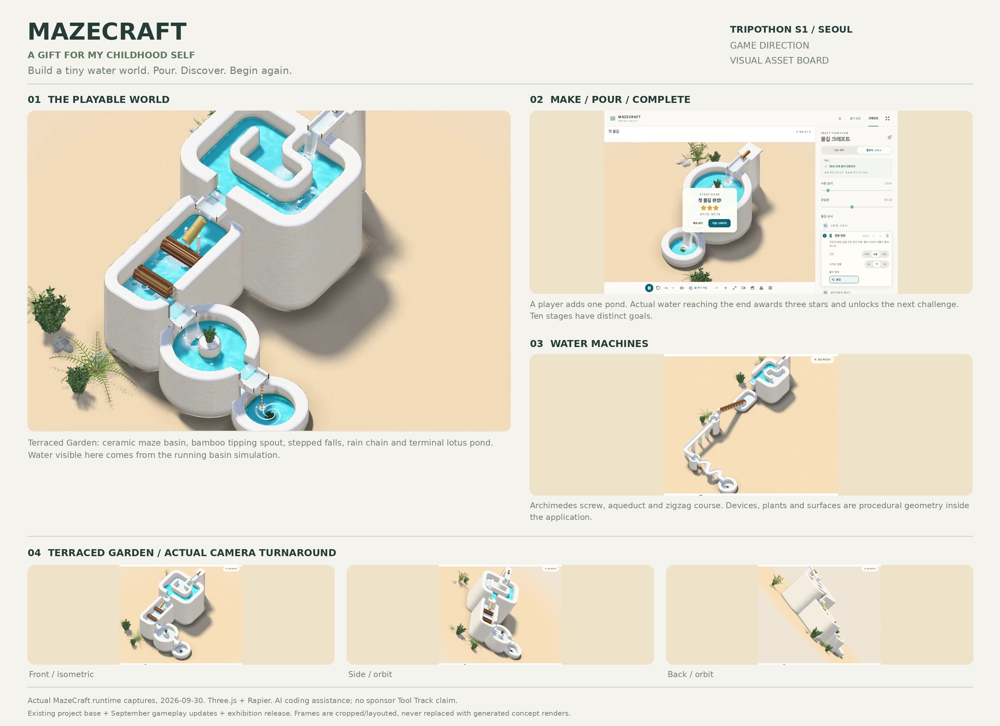

A Gift for My Childhood Self.
Build a tiny water world, pour in a stream, and watch your creation come alive.
Drag to orbit; use the wheel to zoom. On mobile, open the device panel with 장치 목록 열기. Progress is saved in this browser. No sign-in is needed to play.
Continuous capture of the real playable build: build, pour, clear a challenge, drop floating toys, resume progress and inspect a free-built garden.
Silent recording. End trimming only; no internal cuts, replacement renders, music or video-speed edits. 4× is the visible in-game simulation control. This capture uses the application's low-spec post-processing option on software WebGL.

Download PDF board · Download JPEG board
All frames are actual application output. Ceramic devices, plants and floating toys are procedural runtime geometry. No generated concept render replaces gameplay.